Artifacts 产品形态
Anthropic · Claude · 2024-06 · 主干正代
Claude 3.5 Sonnet
Sonnet 成为 coding、视觉与交互式工作产物的主力档。

coding / visual reasoning 提升
以中档成本逼近或超过旧 Opus
编辑判断
能力下放到 Sonnet 档比单纯刷新 Opus 更能改变实际 agent 成本结构。
证据边界
该页对应 2024-06 初版；2024-10 新版单列为 Claude 3.6，避免混淆。